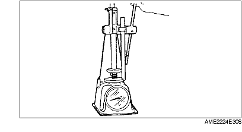
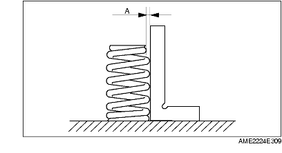

VALVE SPRING INSPECTION
A6E242412125E01
1. Apply pressing force to the pressure spring and inspect the spring height.
-
• If not as specified, replace the valve spring.
-
Pressing force:
-
494.9 N {50.47 kgf, 111.2 lbf}
-
Standard height:
-
27.80 mm {1.094 in}

2. Measure the out-of-square of the valve spring, using a square, as shown.
-
(1) Rotate the valve spring one full turn and measure "A" at the point where the gap is the largest.
-
• If not as specified, replace the valve spring.
-
Valve spring maximum out-of-square:
-
1% (2.10 mm {0.0826 in})
